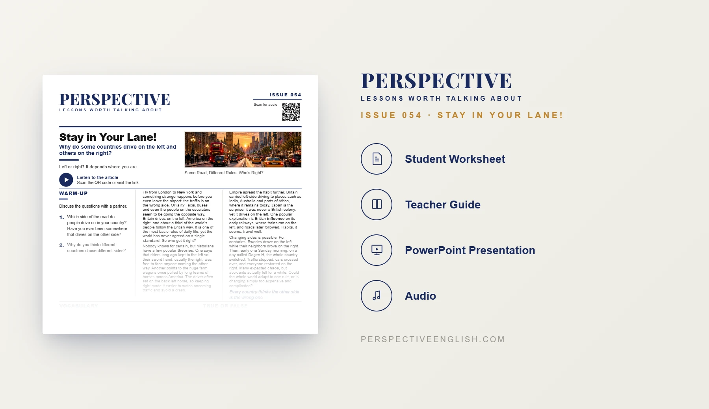

ISSUE 054
Stay in Your Lane! ESL Lesson
Why do some countries drive on the left and others on the right?
A ready-to-teach B1–B2 ESL lesson exploring the history of left-side and right-side driving, Japan, Sweden’s Dagen H and the challenges of changing everyday rules.
CHOOSE YOUR LEVEL
Also available in Collection 10, featuring Issues 051–055.
LESSON PREVIEW

ABOUT THIS LESSON
About This Driving Sides ESL Lesson
Why do people drive on the left in Britain and Japan, but on the right in the United States? In Stay in Your Lane!, students explore historical theories behind driving traditions, from horseback riders and horse-drawn wagons to British influence abroad.
This B1–B2 ESL lesson examines how everyday rules become national habits. Students discover why Japan drives on the left despite never being a British colony, and how Sweden switched from left-side to right-side driving during Dagen H, with an unexpected temporary drop in accidents.
Students trace the ripple effects of a proposed nationwide switch, practice five key vocabulary items, debate international standards, conduct a radio interview with a government minister and write an opinion about whether countries should follow the same everyday rules.
FROM THE ARTICLE
WHAT'S INCLUDED
What's Included in Stay in Your Lane!?
- Magazine-style B1–B2 ESL student worksheet
- Original reading and matching audio about left-side and right-side driving, history, Japan and Sweden’s Dagen H
- Five vocabulary words (standard, theories, influence, chaos, adapt) and five true-or-false comprehension questions
- Five discussion questions about travel, driving traditions, old habits and shared international rules
- The Ripple Effect critical-thinking challenge: predict first and second effects of switching a country from left-side to right-side driving
- Language in Context: complete five sentences using vocabulary from the article
- Speaking challenge: a live radio interview between the minister responsible for the switch and a questioning host
- 150–200 word opinion-writing task about whether countries should follow the same everyday rules
- Teacher guide, complete answer key and model writing
- Ready-to-use classroom presentation
GET THE COMPLETE LESSON
Ready to Teach Stay in Your Lane!?
Get the complete Stay in Your Lane! ESL lesson individually, or get Issues 051–055 together in Collection 10.
Secure checkout and instant digital delivery through Payhip.